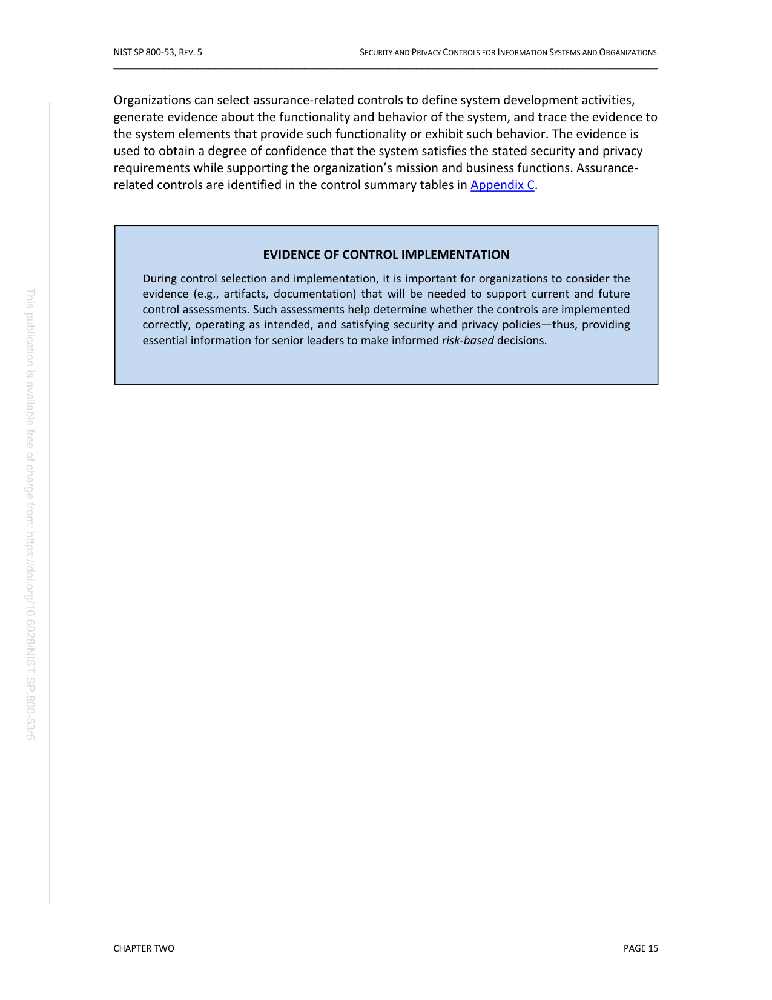
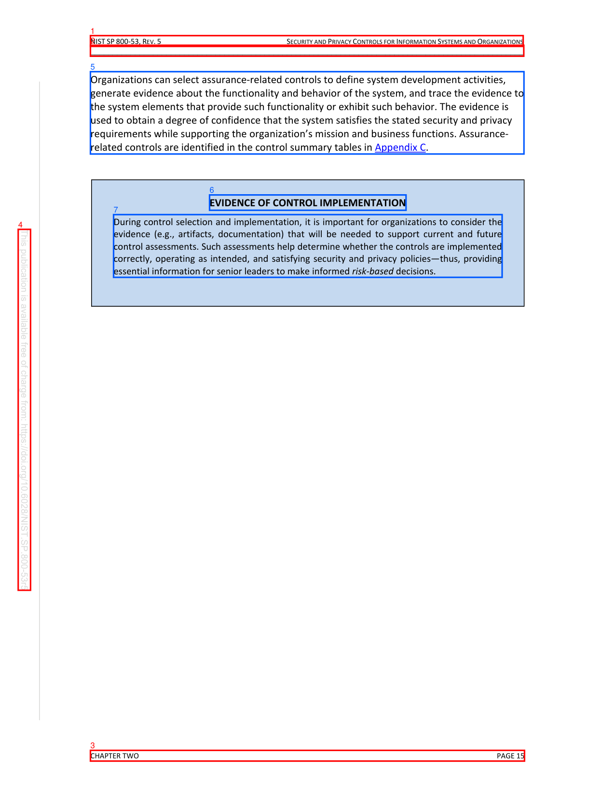

PDF Lab Second-Pass Page Review
Before Evidence


Selected Candidates
cand:p0042:0000:side_chromeside_chrome
{
"bbox": [
0.14705882352941177,
0.04473802296802251,
0.8507378272760927,
0.05821938948197798
],
"block_id": "actual:p42:block:0",
"block_index": 0,
"candidate_id": "cand:p0042:0000:side_chrome",
"confidence": 0.8,
"detection_reason": [
"block_type:header_footer_noise",
"preset_type:side_chrome",
"hardening_interest",
"boundary_geometry"
],
"features": {
"bbox_area": 0.009487,
"block_type": "header_footer_noise",
"has_toc_entries": false,
"semantic_role": "page_chrome",
"source_type": "Header",
"text_length": 94
},
"json_pointer": "/pages/41/blocks/0",
"page_index": 41,
"page_number": 42,
"pdf_id": "NIST_SP_800-53r5:fc63bcd61715d018",
"preset_type": "side_chrome",
"text_excerpt": "NIST SP 800-53, REV. 5 SECURITY AND PRIVACY CONTROLS FOR INFORMATION SYSTEMS AND ORGANIZATIONS"
}cand:p0042:0001:side_chromeside_chrome
{
"bbox": [
0.14705882352941177,
0.05679397390346334,
0.8517353332120609,
0.07054738324097913
],
"block_id": "actual:p42:block:1",
"block_index": 1,
"candidate_id": "cand:p0042:0001:side_chrome",
"confidence": 0.8,
"detection_reason": [
"block_type:header_footer_noise",
"preset_type:side_chrome",
"hardening_interest",
"boundary_geometry"
],
"features": {
"bbox_area": 0.009692,
"block_type": "header_footer_noise",
"has_toc_entries": false,
"semantic_role": "page_chrome",
"source_type": "Header",
"text_length": 97
},
"json_pointer": "/pages/41/blocks/1",
"page_index": 41,
"page_number": 42,
"pdf_id": "NIST_SP_800-53r5:fc63bcd61715d018",
"preset_type": "side_chrome",
"text_excerpt": "_________________________________________________________________________________________________"
}cand:p0042:0002:side_chromeside_chrome
{
"bbox": [
0.14705882352941177,
0.9414804632013495,
0.8528974944469976,
0.9549618345318418
],
"block_id": "actual:p42:block:2",
"block_index": 2,
"candidate_id": "cand:p0042:0002:side_chrome",
"confidence": 0.8,
"detection_reason": [
"block_type:header_footer_noise",
"preset_type:side_chrome",
"hardening_interest",
"boundary_geometry"
],
"features": {
"bbox_area": 0.009516,
"block_type": "header_footer_noise",
"has_toc_entries": false,
"semantic_role": null,
"source_type": "Body",
"text_length": 19
},
"json_pointer": "/pages/41/blocks/2",
"page_index": 41,
"page_number": 42,
"pdf_id": "NIST_SP_800-53r5:fc63bcd61715d018",
"preset_type": "side_chrome",
"text_excerpt": "CHAPTER TWO PAGE 15"
}cand:p0042:0003:side_chromeside_chrome
{
"bbox": [
0.0296323533151664,
0.28780303338561397,
0.049705879361021756,
0.7406287915778883
],
"block_id": "actual:p42:block:3",
"block_index": 3,
"candidate_id": "cand:p0042:0003:side_chrome",
"confidence": 0.8,
"detection_reason": [
"block_type:header_footer_noise",
"preset_type:side_chrome",
"hardening_interest",
"boundary_geometry"
],
"features": {
"bbox_area": 0.00909,
"block_type": "header_footer_noise",
"has_toc_entries": false,
"semantic_role": null,
"source_type": "Boilerplate",
"text_length": 92
},
"json_pointer": "/pages/41/blocks/3",
"page_index": 41,
"page_number": 42,
"pdf_id": "NIST_SP_800-53r5:fc63bcd61715d018",
"preset_type": "side_chrome",
"text_excerpt": "This publication is available free of charge from: https://doi.org/10.6028/NIST.SP.800 -53r5"
}cand:p0042:0004:appendixappendix
{
"bbox": [
0.14704092187819137,
0.08994257570517183,
0.8519873525582108,
0.19326826538702455
],
"block_id": "actual:p42:block:4",
"block_index": 4,
"candidate_id": "cand:p0042:0004:appendix",
"confidence": 0.8,
"detection_reason": [
"block_type:paragraph_block",
"preset_type:appendix",
"hardening_interest"
],
"features": {
"bbox_area": 0.072839,
"block_type": "paragraph_block",
"has_toc_entries": false,
"semantic_role": null,
"source_type": "Body",
"text_length": 547
},
"json_pointer": "/pages/41/blocks/4",
"page_index": 41,
"page_number": 42,
"pdf_id": "NIST_SP_800-53r5:fc63bcd61715d018",
"preset_type": "appendix",
"text_excerpt": "Organizations can select assurance-related controls to define system development activities, generate evidence about the functionality and behavior of the system, and trace the evidence to the system elements that provide such functionality or exhibit such behavior. The evidence is used to obtain a degree of confidence that the system satisfies the stated security and privacy requirements while supporting the organization\u2019s mission and business functions. Assurance- related controls are identifi"
}cand:p0042:0005:texttext
{
"bbox": [
0.3407843097362643,
0.2446108538695056,
0.660252290613511,
0.2638535740399601
],
"block_id": "actual:p42:block:5",
"block_index": 5,
"candidate_id": "cand:p0042:0005:text",
"confidence": 0.8,
"detection_reason": [
"block_type:paragraph_block",
"preset_type:text"
],
"features": {
"bbox_area": 0.006147,
"block_type": "paragraph_block",
"has_toc_entries": false,
"semantic_role": null,
"source_type": "Body",
"text_length": 34
},
"json_pointer": "/pages/41/blocks/5",
"page_index": 41,
"page_number": 42,
"pdf_id": "NIST_SP_800-53r5:fc63bcd61715d018",
"preset_type": "text",
"text_excerpt": "EVIDENCE OF CONTROL IMPLEMENTATION"
}cand:p0042:0006:texttext
{
"bbox": [
0.1847058464499081,
0.2692922727026121,
0.8164947609496273,
0.3479847378200955
],
"block_id": "actual:p42:block:6",
"block_index": 6,
"candidate_id": "cand:p0042:0006:text",
"confidence": 0.8,
"detection_reason": [
"block_type:paragraph_block",
"preset_type:text"
],
"features": {
"bbox_area": 0.049717,
"block_type": "paragraph_block",
"has_toc_entries": false,
"semantic_role": null,
"source_type": "Body",
"text_length": 451
},
"json_pointer": "/pages/41/blocks/6",
"page_index": 41,
"page_number": 42,
"pdf_id": "NIST_SP_800-53r5:fc63bcd61715d018",
"preset_type": "text",
"text_excerpt": "During control selection and implementation, it is important for organizations to consider the evidence (e.g., artifacts, documentation) that will be needed to support current and future control assessments. Such assessments help determine whether the controls are implemented correctly, operating as intended, and satisfying security and privacy policies\u2014thus, providing essential information for senior leaders to make informed risk-based decisions."
}Review Validation
{
"candidate_count": 7,
"errors": [],
"expected_candidate_ids": [
"cand:p0042:0000:side_chrome",
"cand:p0042:0001:side_chrome",
"cand:p0042:0002:side_chrome",
"cand:p0042:0003:side_chrome",
"cand:p0042:0004:appendix",
"cand:p0042:0005:text",
"cand:p0042:0006:text"
],
"ok": true,
"page_case": {
"case_id": "page_case_0001_p0042",
"page_number": 42
},
"schema": "pdf_lab.second_pass.review_validation.v1",
"seen_candidate_ids": [
"cand:p0042:0000:side_chrome",
"cand:p0042:0001:side_chrome",
"cand:p0042:0002:side_chrome",
"cand:p0042:0003:side_chrome",
"cand:p0042:0004:appendix",
"cand:p0042:0005:text",
"cand:p0042:0006:text"
]
}
Page Case
{
"candidate_ids": [
"cand:p0042:0000:side_chrome",
"cand:p0042:0001:side_chrome",
"cand:p0042:0002:side_chrome",
"cand:p0042:0003:side_chrome",
"cand:p0042:0004:appendix",
"cand:p0042:0005:text",
"cand:p0042:0006:text"
],
"case_id": "page_case_0001_p0042",
"forced_by_human_annotation": false,
"page_index": 41,
"page_number": 42,
"preset_counts": {
"appendix": 1,
"side_chrome": 4,
"text": 2
},
"selection_probability_basis": {
"candidate_count_on_page": 7,
"candidate_share_estimate": 1.0,
"forced_page": false,
"method": "max(weighted_page_score_inclusion_estimate,candidate_share_estimate)",
"page_score": 26.0,
"total_candidate_count": 7,
"total_page_score": 26.0,
"weighted_page_score_inclusion_estimate": 1.0
},
"selection_probability_estimate": 1.0,
"selection_reason": [
"high_risk_preset",
"high_risk_candidate",
"boundary_geometry",
"high_candidate_score"
],
"selection_score": 26.0,
"strata": [
"geometry:boundary",
"preset:appendix",
"preset:side_chrome",
"preset:text",
"risk:high"
]
}
Artifacts
- state.json
- sampled_candidate_manifest.json
- page_before.json
- page_before.png
- page_candidates.png
- selected_candidates.json
- candidate_presets.json
- review_request.json
- review_request_validation.json
- scillm_orchestrator_page_dag_spec.json
- scillm_orchestrator_page_dag_spec_validation.json
- scillm_orchestrator_page_submission.json
- scillm_orchestrator_page_submission_validation.json
- review_validation.json
- scillm_review_preflight.json
- scillm_review_receipt.json
- review_response.json
- scillm_page_orchestrator_run_request.json
- scillm_page_orchestrator_run_validation.json
- patch_baseline.json
- patch_evidence_workspace.json
- patch_request.json
- patch_validation.json
- patch_attempts_ledger.json
- patch_attempt_01_validation.json
- patch_attempt_01_prompt_contract.json
- patch_attempt_01_prompt_review_payload.txt
{kind=link}
{kind=link}